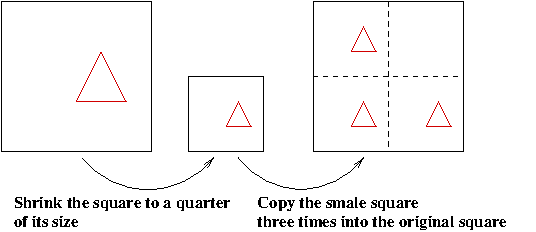
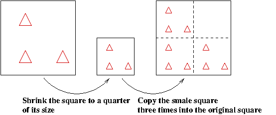
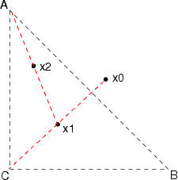

| Next document |
Sierpinski Gasket
The following figure shows the famous Sierpinski Gasket or Sierpinski triangle.

It is a typical example of a fractal object. We give a definition of a fractal object in the section in the next document. We do not need this definition right now.
To store this figure on a computer, we need 24235 bytes (png format). Using a simple mathematical technique (namely, iterative functions systems (IFS) ), this figure (to any level of accuracy) can be stored using only 552 bytes (a simple Matlab code).
The elementary way to save a (black and white) figure is to store on the computer the information for each pixel of the figure. In the next section, we explain how to draw the Sierpinski Gasket and how to stored it very efficiently.
Basically, the IFS technique used to create the Sierpinski Gasket can be used to create other images as we will see in the next document.
Iterative Function System
The Sierpinski Gasket can be generated using the simple iterative function system that we describe below.
- First, we chose any set of points in a square: a line, a triangle, ... are fine.
- Second, we shrink the original square to a quarter of its original size.
- Third, we draw back into the original square three copies of the shrunk square as illustrated in the following figures.

We repeat the second and third steps above as many times as we want (until we are happy with the figure we get). The next figure is the second iteration of the second and third steps of the IFS described above.

Independently of the set of points that we choose at the
beginning, we always get the Sierpinski triangle after
an infinite
number of iterations.
In the following application, we may select one of the three initial figures proposed, and the number of iterations to be performed. The reader should only use a small number of iterations, no more than 20, to avoid exceeding the capacity of the web browser.
- Number of iterations:
- Initial figure:
The reader should not choose more than 7 or 8 iterations. More iterations than that will likely fill the stack reserved for the browser on the computer. Moreover, because of the limited number of pixels, there is a limit on the minimal size of each block of the Sierpinski triangle that we can draw.
Instead of storing on the computer all the pixels of the figure of the Sierpinski triangle, we only have to store on the computer (using mathematical formulae) the second and third steps of the IFS described above.
The Sierpinski triangle on the unit square is generated by the IFS composed of the following three functions. They shrink the unit square to a square where both sides have length 1/2, and map the shrunk square back into the unit square as described above.
- First function:
X = x/2
Y = y/2 + 1/2 - Second function:
X = x/2 + 1/2
Y = y/2 - Third function:
X = x/2
Y = y/2
There is a mathematical theorem that explains why the IFS for the
Sierpinski triangle always generate the same image after
an infinite
number of iterations independently of
the initial set that has been chosen. In fact, each IFS generates
only one image. This theorem is called the
Question : What happen if the second function if the IFS above also rotates the square by 90 degrees?
Probabilistic System
This is a simple technique to illustrate the Sierpinski gasket. Let A the point with coordinate (0,1), B the point with coordinate (1,0) and C the origin (see the figure below). Suppose that we have an unbiased dice and that 1,6 are associated to A, 2,5 are associated to B and 3,4 are associated to C.

- We choose a point x0 in the plane.
- We throw the dice. Suppose that we get a 3.
- The point x1 is the middle of the segment between x0 and C.
- We throw the dice a second time. Suppose that we get a 1.
- The point x2 is the middle of the segment between x1 and A.
- And so on.
The isolated points are invisible. We only see the cluster of points. This cluster of points shadows the Sierpinski gasket. To get a good approximation of the Sierpinski gasket, the number of iterations must be very large and the random number generator of our computer must be really ... really good.
Question : Which are the points that constitute (make up)
the Sierpinski gasket?
Question : What happen if the
dice is biased (loaded)?
Good references (for advanced undergraduate students in mathematics) are Fractals Everywhere by Micheal Barnsley (Academic press, 1988) and Chaos and Fractals by H.-O. Peitgen, H. Jürgens and D. Saupe (Springer-Verlag, 1992).
| Next document |